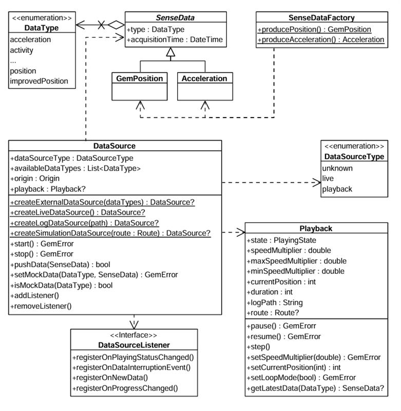
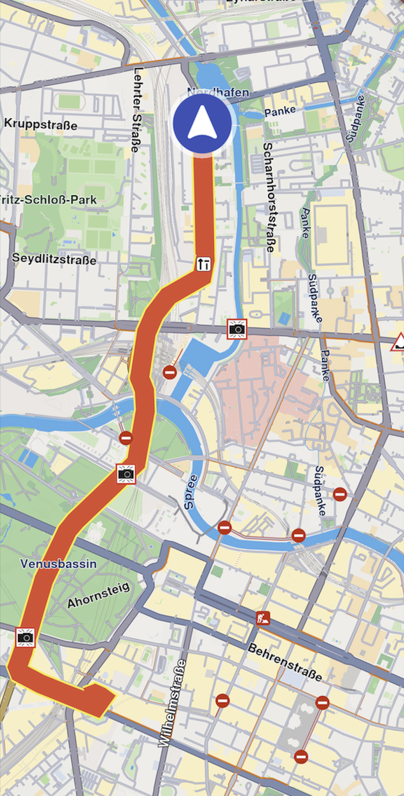

Sensors and Data Sources¶
The Navivation SDK integrates with device sensors and external data sources to enhance map functionality. Use GPS, compass, accelerometer, and custom telemetry to build navigation apps, augmented reality layers, and location-aware services.
Sensor Types¶
The SDK supports the following sensor data types:
| Type | Description |
|---|---|
| Acceleration | Measures linear movement of the device in three-dimensional space. Useful for detecting motion, steps, or sudden changes in speed. |
| Activity | Represents user activity such as walking, running, or being stationary, typically inferred from motion data. Only available on Android devices. |
| Attitude | Describes the orientation of the device in 3D space, often expressed as Euler angles or quaternions. |
| Battery | Provides battery status information such as charge level and power state. |
| Camera | Indicates data coming from or triggered by the device's camera, such as frames or detection events. |
| Compass | Gives directional heading relative to magnetic or true north using magnetometer data. |
| Magnetic Field | Reports raw magnetic field strength, useful for environmental sensing or heading correction. |
| Orientation | Combines multiple sensors (like accelerometer and magnetometer) to calculate absolute device orientation. |
| Position | Basic geographic position data, including latitude, longitude, and optionally altitude. |
| Improved Position | Enhanced position data that has been refined using filtering, correction services, or sensor fusion. |
| Gyroscope | Measures the rate of rotation around the device’s axes, used to detect turns and angular movement. |
| Temperature | Provides temperature readings, either ambient or internal device temperature. |
| Notification | Represents external or system-level events that are not tied to physical sensors. |
| Mount Information | Describes how the device is physically mounted or oriented within a fixed system, such as in a vehicle. |
| Heart Rate | Biometric data representing beats per minute, typically from a fitness or health sensor. |
| NMEA Chunk | Raw navigation data in NMEA sentence format, typically from GNSS receivers for high-precision tracking. Only available on Android devices. |
| Unknown | A fallback type used when the source of the data cannot be determined. |
More details about the Position and ImprovedPosition classes are available here.
⚠️ WARNING:
Ensure that the specific
DataTypevalues are supported on the target platform. Attempting to create data sources or recordings with unsupported types may result in failures.
Working With Data Sources¶
The main classes for working with data sources:

The DataType enum represents multiple data types. Each sensor value is stored in a class derived from SenseData, such as GemPosition and Acceleration.
Use the SenseDataFactory helper class to create objects of these types. This class provides static methods like producePosition and produceAcceleration to create custom sensor data. You'll need this only when creating a custom data source with custom data.
Create a data source¶
Create a DataSource using one of these static methods:
createLiveDataSource- Collects data from the device's built-in sensors in real time. Most common for applications relying on actual sensor inputcreateExternalDataSource- Accepts user-supplied data. Feed data into this source via thepushDatamethod. Note thatpushDatareturnsfalseif used with a non-external sourcecreateLogDataSource- Replays data from a previously recorded session (log file: gpx, nmea). Useful for debugging, training, or offline data processing. See the Recorder docs for recording datacreateSimulationDataSource- Simulates movement along a specified route. Use for UI prototyping, testing, or feature validation without real-world movement
The first two types (live and external) are categorized under DataSourceType.live. The latter two (log and simulation) fall under DataSourceType.playback.
📝 INFO
By default, a data source starts automatically upon creation. However, it may not be fully initialized when you obtain the data source object.
If you add a
DataSourceListenerimmediately after acquiring the data source, you may miss the initial "playing status changed" notification—the data source may already be in the started state when the listener is attached.
Configure and control a data source¶
Stop or start a data source using the control methods:
dataSource.stop();
// ...
dataSource.start();Configure a data source's behavior using these methods:
setConfiguration- Set the sampling rate or data filtering behaviorsetMockPosition- Simulate location updates
⚠️ WARNING
The
setMockPositionmethod is only available for live data sources and supports only theDataType.positiontype. To mock other data types, use an externalDataSource.
Use DataSourceListener¶
Register a DataSourceListener to receive updates from a data source. React to various events:
- Changes in the playing status
- Interruptions in data flow (e.g., sensor stopped, app went to background)
- New sensor data becoming available
- Progress updates during playback
Create a listener using the factory constructor and pass the appropriate callbacks:
final listener = DataSourceListener(
onPlayingStatusChanged: (dataType, status) {
print('Status for $dataType changed to $status');
},
onDataInterruptionEvent: (dataType, reason, ended) {
print('Data interruption on $dataType: $reason. Ended: $ended');
},
onNewData: (data) {
print('New data received: $data');
},
onProgressChanged: (progress) {
print('Playback progress: $progress%');
},
);Register this listener with a DataSource for a specific DataType (in this case the position):
myDataSource.addListener(DataType.position, listener);Remove the listener when no longer needed:
myDataSource.removeListener(DataType.position, listener);Use the Playback Interface¶
The Playback interface controls data sources that support playback functionality—specifically those of type DataSourceType.playback, such as log files or simulated route replays. It is not compatible with live or custom data sources.
Access a Playback instance by checking the data source type:
if(myDataSource.dataSourceType == DataSourceType.playback) {
final playback = myDataSource.playback!;
playback.pause();
// ...
playback.resume();
}Playback-enabled data sources can be paused and resumed. Adjust the playback speed by setting a speedMultiplier, which must fall within the range defined by Playback.minSpeedMultiplier and Playback.maxSpeedMultiplier.
Control playback position using Playback.currentPosition, which represents the elapsed time in milliseconds from the beginning of the log or simulation. This allows you to skip to any point in the playback.
Access supplementary metadata:
Playback.logPath- Path to the log file being executedPlayback.route- Route being simulated (if applicable)
Track positions¶
Track positions from a DataSource on a map by rendering a marker polyline between relevant map link points. Use the MapViewExtensions class member of GemMapController.

Tracked path
final mapViewExtensions = controller.extensions;
final err = mapViewExtensions.startTrackPositions(
updatePositionMs: 500,
settings: MarkerCollectionRenderSettings(
polylineInnerColor: Colors.red,
polylineOuterColor: Colors.yellow,
polylineInnerSize: 3.0,
polylineOuterSize: 2.0),
dataSource: dataSource);
// other code ...
mapViewExtensions.stopTrackPositions();| Method | Parameters | Return type |
|---|---|---|
| startTrackPositions | - updatePositionMs - Tracked position collection update frequency. High frequency may decrease rendering performance on low-end devices- MarkerCollectionRenderSettings - Markers collection rendering settings in the map view- DataSource? - DataSource object which positions are tracked |
GemError |
| stopTrackPositions | - GemError.success on success- GemError.notFound if tracking is not started |
|
| isTrackedPositions | bool |
|
| trackedPositions | List<Coordinates> |
📝 INFO
If the
dataSourceparameter is left null, tracking uses the currentDataSourceset inPositionService. If noDataSourceis set inPositionService,GemError.notFoundis returned.
Get tracked positions¶
Retrieve tracked positions using the trackedPositions getter after calling MapViewExtensions.startTrackPositions. This returns a list of Coordinates used to render the path polyline on GemMap.
final mapViewExtensions = controller.extensions;
mapViewExtensions.trackedPositions;
// other code ...
mapViewExtensions.stopTrackPositions();⚠️ WARNING
Calling the
trackedPositionsgetter afterstopTrackPositionsreturns an empty list.